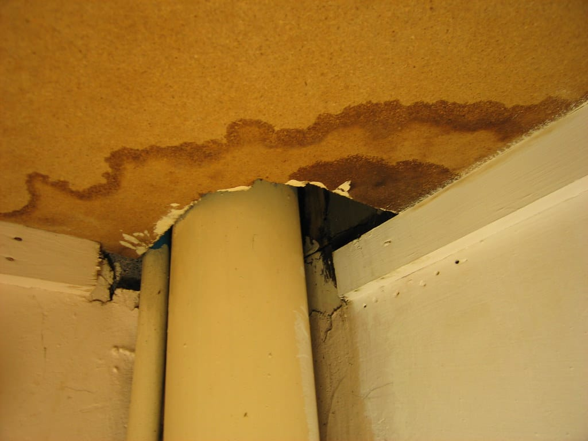
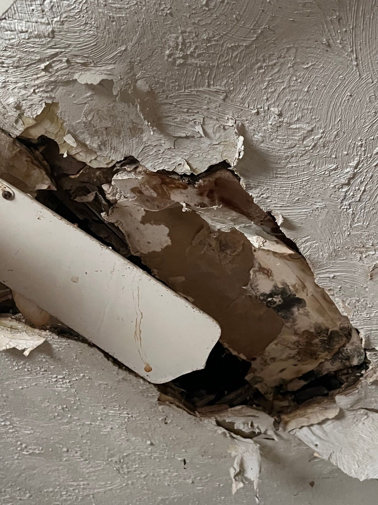

Water on the floor or through the ceiling? Call now. The clock is running.
Drywall, carpet pad and wood start wicking water within minutes, and mold can begin growing in 24 to 48 hours. Fast extraction and proper drying are the difference between a repair and a rebuild.
- Emergency extraction
- Flooded basements
- Ceiling leaks
- Structural drying

What happens to a wet house, hour by hour
This is why restoration companies treat water as an emergency. The bar shows how much of the damage is still preventable at each stage.
Stop the source and protect what you can
Water spreads across floors and into wall bottoms. Shut off the water, turn off power to wet areas if it’s safe, lift furniture onto blocks or foil, and get rugs and electronics out.
Extraction
Truck-mounted or portable extractors pull standing water out of carpet and pad. Drywall starts to swell and wick upward, and furniture finishes stain floors. Getting the water out is the biggest single factor in what can be saved.
Moisture mapping and drying setup
Meters and thermal imaging show how far the water went. Wet pad and saturated drywall bottoms are removed, and air movers and dehumidifiers are placed to dry the structure.
The mold window opens
Wet materials left without drying equipment can start growing mold in this range. Odors appear, and wood floors begin to cup.
Monitoring, or a bigger job
With equipment running, the crew checks readings daily until materials hit dry targets, usually 3 to 5 days. Without drying, the job grows to include mold remediation and more replacement.
Getting the water out, fast
Shop vacs and towels can’t pull water out of carpet pad or the bottom of a wall. Professional extraction uses high-powered units, weighted extraction tools that compress carpet and pull water from the pad, and submersible pumps for standing water deeper than an inch or two.
The crew should also tell you what category of water you’re dealing with. Clean water from a supply line is handled very differently from water that has touched soil, or from a toilet or sewer line. That decides what can be dried and what has to go.
Then comes drying. Air movers push moisture out of materials, and dehumidifiers pull it out of the air. Boise’s dry air helps in summer, but don’t just open the windows in January. It slows drying and risks freezing.
Water still spreading?Every hour of standing water adds to the job. Calls are answered 24/7.
Call (321) 985-3339When the basement fills up

A flooded basement in the Treasure Valley usually comes from one of four places: a failed water heater, a broken supply line, a sump pump that couldn’t keep up, or irrigation and stormwater coming through a window well or foundation.
Before anyone goes down there
- Don’t walk into standing water if outlets, cords or the furnace are underwater. Shut off power at the panel only if you can reach it without standing in water. Otherwise, call the utility.
- If the water came from a floor drain or toilet, treat it as contaminated. See sewage backup cleanup.
- Photograph the water level on walls before it drops.
What the crew does
Pumps for deep water, then extraction, then removal of wet carpet pad and the bottom of saturated drywall (a “flood cut”), then drying with containment around the area. Furnaces and water heaters that were submerged should be checked by a qualified technician before restarting.
A stain, a drip, or a sag overhead

Ceiling water damage comes from above: an upstairs bathroom, a failed wax ring, a supply line to a fridge, an HVAC condensate line in the attic, an ice dam, or a roof leak. The ceiling shows it last, after the water has already soaked the insulation and framing above.
If the ceiling is bulging
Water pooling on drywall is heavy. Move people and belongings out from under it and put a bucket underneath. A specialist may make a small controlled hole to drain it, so the whole panel doesn’t come down at once. Don’t stand directly under it to do this yourself.
Finding the source
Stain location often points to the cause. A ring under a bathroom points to the toilet or tub drain, a line along an exterior wall to the roof or an ice dam, and a spot near a vent to the HVAC condensate line. Thermal imaging shows how far the wet area spreads past the visible stain.
After it’s dry
Insulation that got soaked usually gets replaced. Drywall that sagged or crumbled is cut out, and the joists are dried and checked before patching.
Stain overhead or water underfoot, the first step is the same.Call, describe the source, and we’ll get you to a crew that can be on the way.
Call (321) 985-3339Common questions
How long does it take to dry out a house after water damage?
With professional drying equipment, most residential water losses reach dry readings in three to five days. Hardwood floors, plaster and saturated subfloors can take longer.
Will insurance cover water damage?
Many homeowner policies cover sudden and accidental water damage, like a burst pipe or a failed supply line. Gradual leaks, groundwater seepage and flood from outside are often excluded or need separate coverage. Photograph everything and call your insurer early.
Can I dry it myself with fans?
For a small, clean spill caught right away, possibly. Once water reaches carpet pad, wall cavities or subfloor, household fans rarely dry it fully, and hidden moisture leads to mold. Moisture readings tell you for sure.
Should I turn on the furnace to dry things out?
Heat helps some, but if water reached the ductwork or the furnace, have it checked before running it. Blowing air through wet ducts can spread moisture and odors.